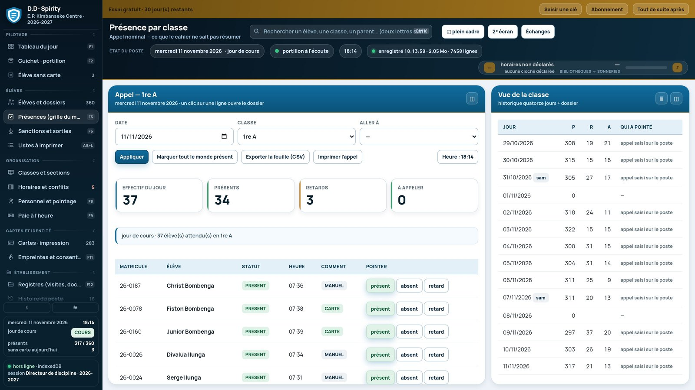
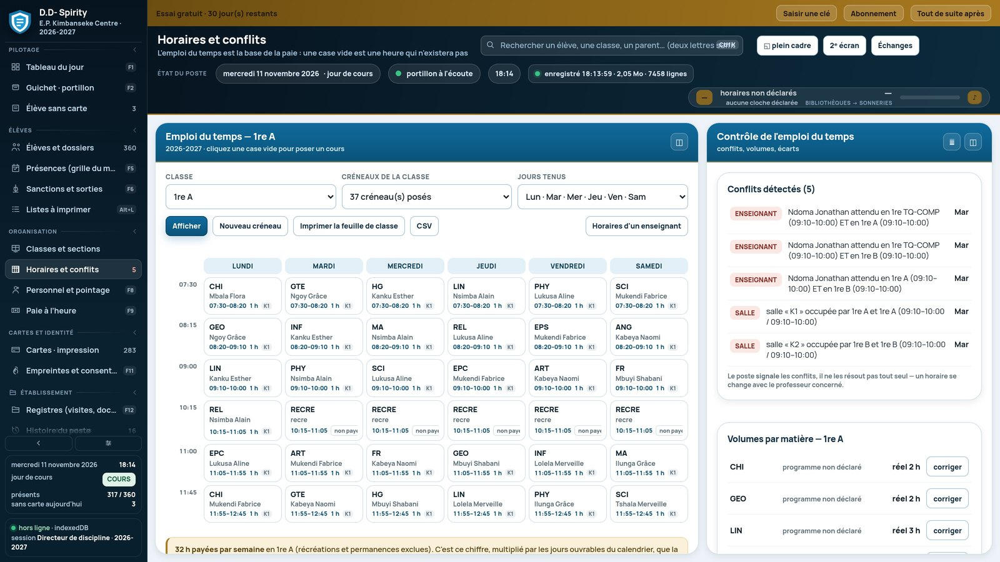
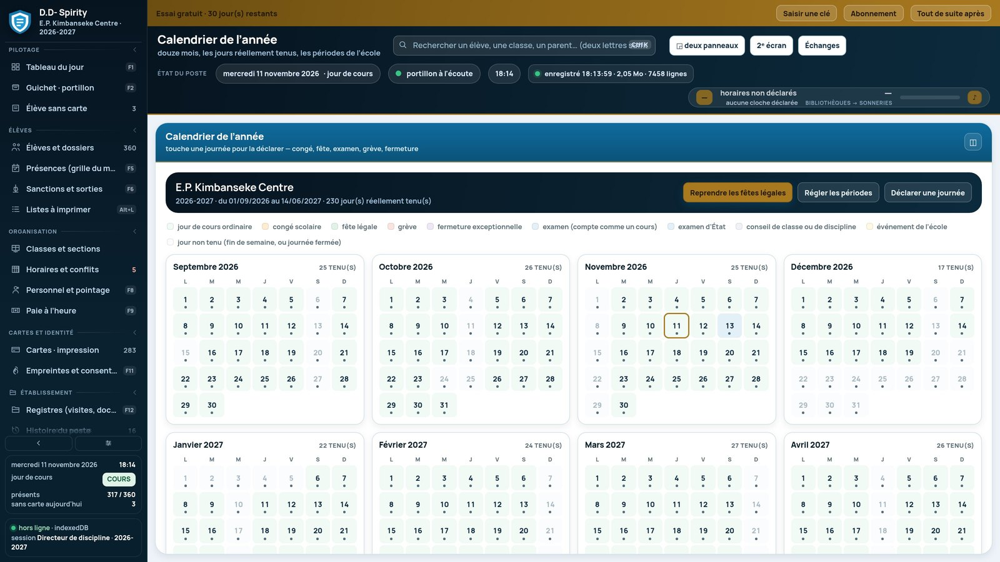

D.D- Spirity — le bureau du Directeur de Discipline, tenu à jour.
Entrées, retards, sorties, présences, cartes d'élèves, sanctions, horaires, personnel et paie : un poste qui organise la journée de l'école, et un téléphone qui rapporte du terrain ce qu'il a noté.
Un poste et un téléphone. Le poste tient le registre, le téléphone va chercher ce que le bureau ne peut pas voir.
D.D- Spirity est fait pour un Directeur de Discipline : celui qui sait qui est entré, qui est arrivé en retard, qui est sorti, qui doit être convoqué. Le logiciel lui rend cette information sans la faire recopier deux fois.
Sur le poste Windows, tout le registre de l'école : élèves et classes, cartes imprimables avec QR, présences, discipline, horaires, personnel, paie du mois, calendrier scolaire. Sur le téléphone, une application de terrain volontairement réduite : elle ne crée ni élève ni compte, elle reçoit les listes du poste quand on la branche, et rapporte ses notes.
Ce que fait D.D- Spirity
Portillon et oublis de carte
Une carte scannée pointe l'élève. Sans carte, la preuve retenue est écrite (photo confirmée, appel nominal, code) — jamais une empreinte d'élève.
Cartes d'élèves imprimables
Recto, verso, QR et CODE-128, huit cartes par feuille A4 aux cotes réelles. Le numéro de carte et le matricule ne se confondent pas.
Présences et appels
L'appel d'une classe se fait à la grille du jour, avec les retards et les motifs. Le poste ne déclare personne absent à la place du directeur.
Discipline et sanctions
Faits, décision, suites, observations au dossier. Une sortie sans retour constaté reste ouverte et s'affiche comme telle.
Horaires, séances et paie
Les séances faites et réduites alimentent la paie à la durée réelle. Aucun barème n'est inventé : les taux s'écrivent dans la fiche de l'agent.
Calendrier et jours tenus
Année scolaire, périodes, vacances, fériés, examens, jours réellement tenus : ce sont ces jours qui comptent dans les calculs.
Le poste, tel qu'il s'ouvre.
Ces cinq vues viennent du logiciel lui-même, sur une année d'essai chargée par l'installateur : pas une maquette, pas une image retouchée. Cliquez pour agrandir.
Le poste s'ouvre sur deux panneaux : le travail à gauche, le détail à droite. C'est son identité, et chaque écran choisit sa proportion.





Comment il s'installe, ce qu'il exige.
- Poste
- Windows 10 / 11
- Terrain
- Android (APK)
- Connexion
- Aucune, jamais
- Données
- Un fichier local, sauvegardé
- Échange
- Dossier partagé ou dépôt du rapport
- Impression
- Cartes, appels, bulletins, états
Le poste se livre vide : ni école fictive, ni tarif, ni volume horaire. Au premier lancement, l'installateur pose les décisions de l'école — nom, jours tenus, durée réelle d'un cours, niveaux, sections, personnel, cartes, calendrier, comptes.
Le téléphone n'a pas de compte et ne s'installe pas en dix écrans : il est livré vide, se remplit au branchement, et rend ses notes. C'est un périphérique d'entrée, pas un second logiciel.
Télécharger D.D- Spirity
Le poste, la version sans installation, et le téléphone.
Poste Windows — installateur
Dépôt en coursLe bureau du Directeur de Discipline, installé sur le poste de l'école.
- Windows 10 et 11, 64 bits
- Raccourcis bureau et menu Démarrer, désinstallation propre
- Notice d’installation dans le paquet
Poste en fichier autonome
Dépôt en coursPour l'école qui ne veut rien installer : un fichier HTML, ouvert dans le navigateur du poste.
- Aucune installation, aucun droit administrateur
- Même logiciel, mêmes fonctions
- Les données restent dans le navigateur du poste
Application de terrain (Android)
Dépôt en coursLe téléphone du portillon et des tours de classes : il reçoit les listes du poste et rapporte ses notes.
- Android 8 et plus
- Installation par fichier APK
- Aucun compte à créer sur le téléphone
Les boutons se remplissent depuis un seul fichier de configuration
(assets/js/telechargements.js) : version, taille et
empreinte SHA-256 y sont écrites à chaque publication.